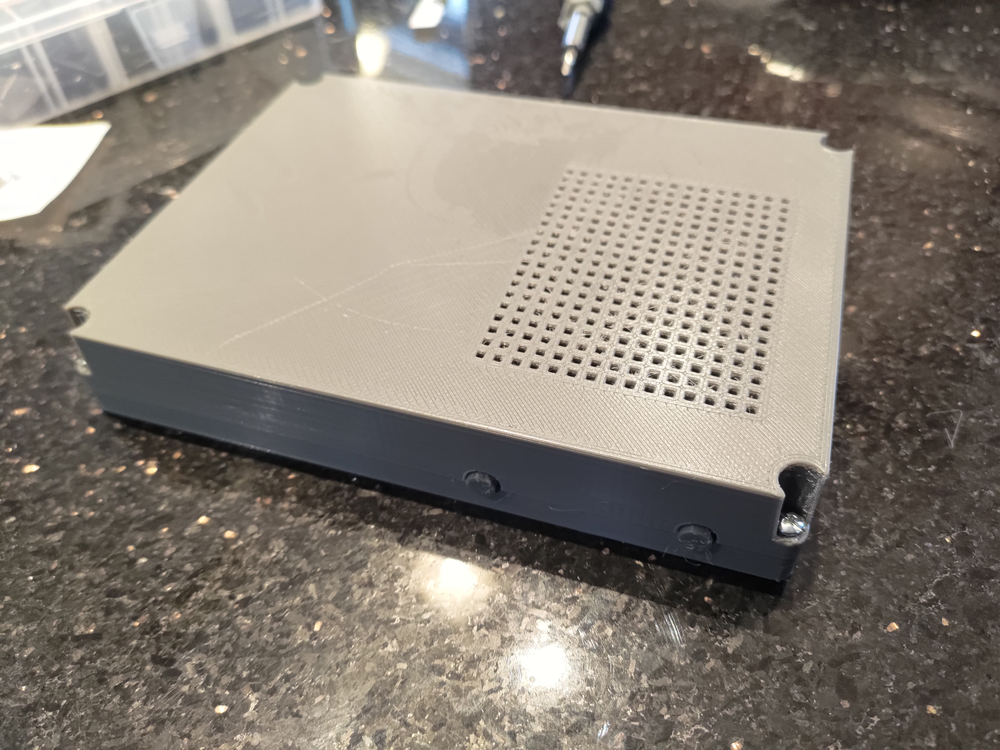
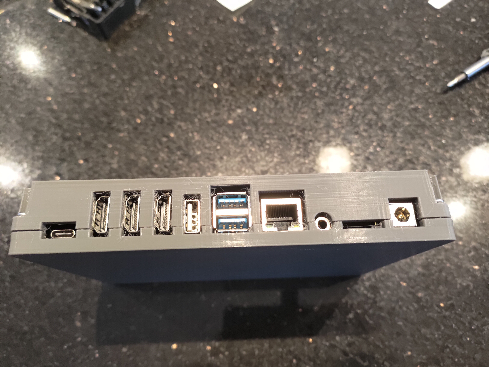
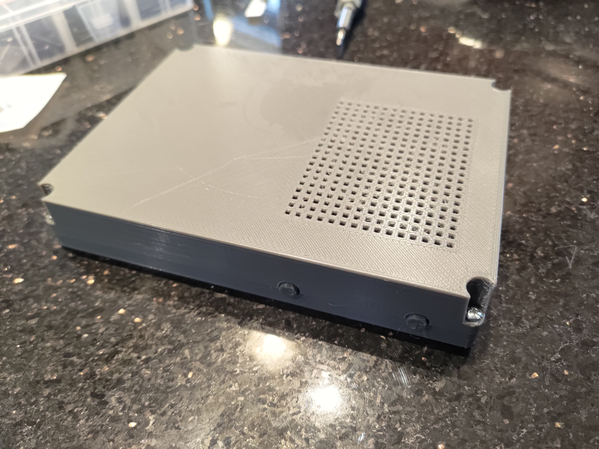
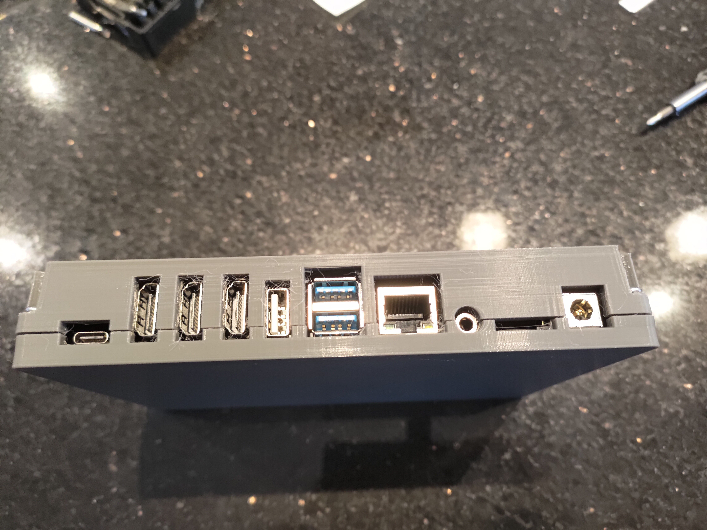
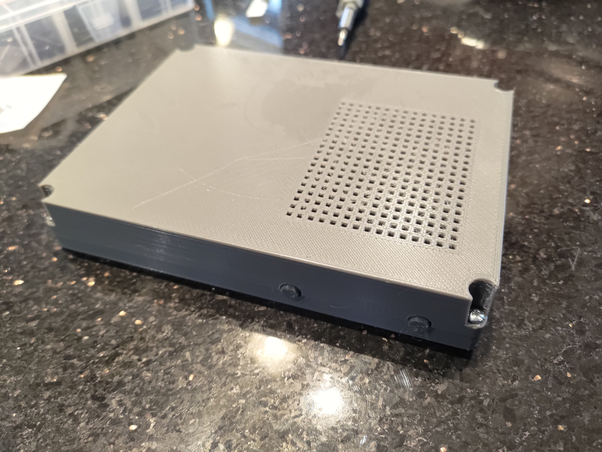
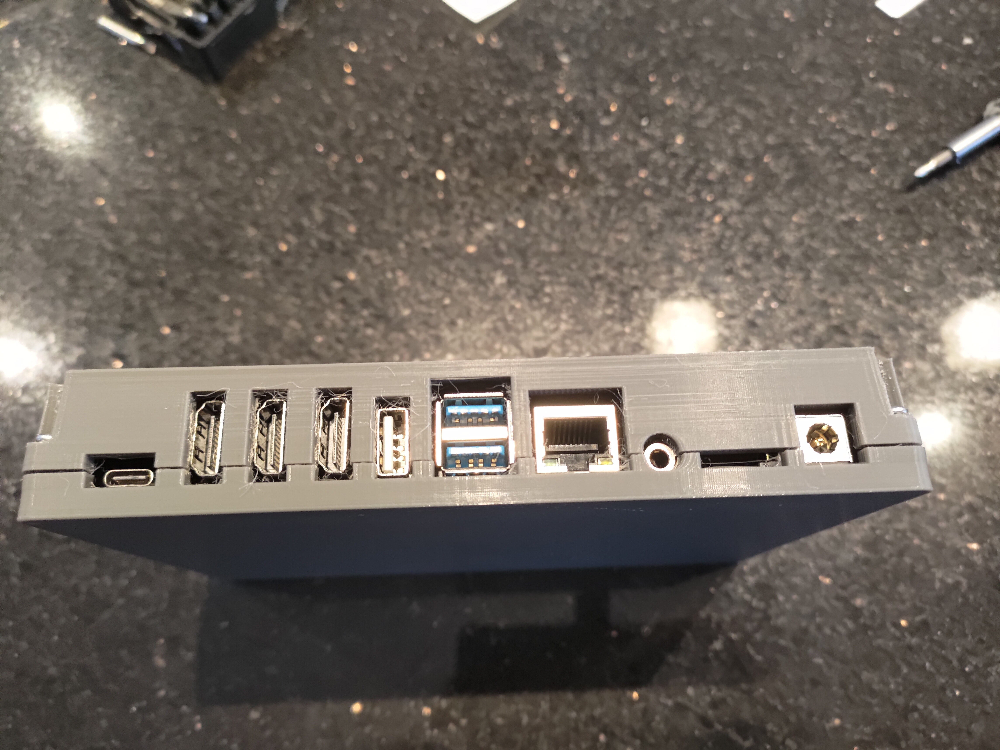

I built my own NAS with a 3D Printed enclosure. The enclosure was modeled with OpenSCAD, and the printer used was a VoxelLab Aquila C2. It was made with PLA, and it took a few tries to get good bed adhesion.


The board used was a CM3588 by Friendly Elec, with a 2.4Ghz quad-core processor and 8GB of RAM. The operating system I chose is OpenMediaVault.